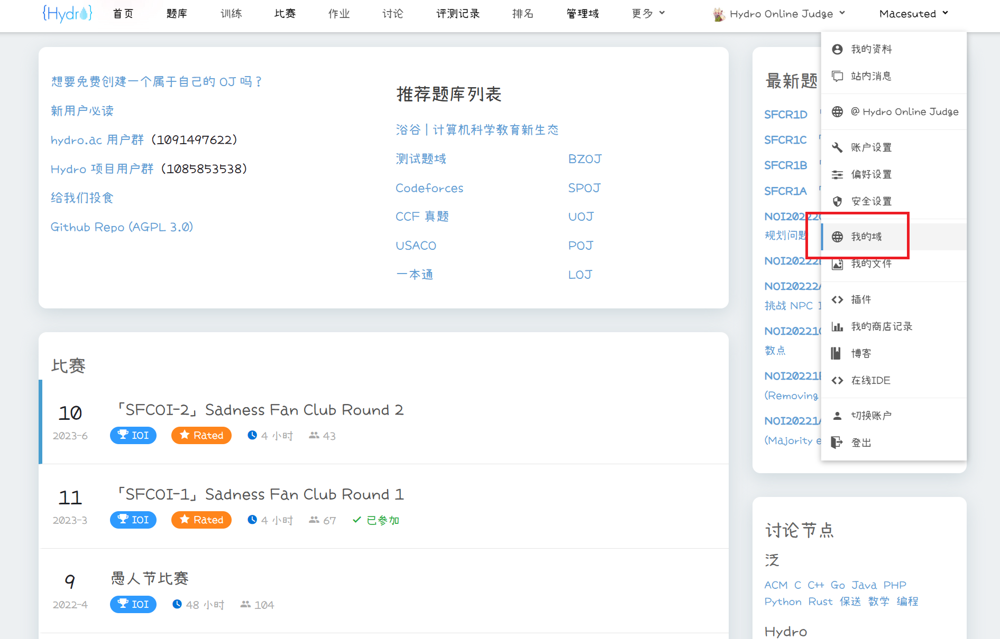
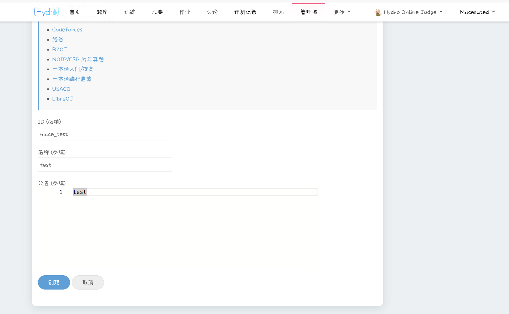

创建与管理#
实例选择#
可以在任何一个 Hydro 实例上创建域，除非实例管理员禁止用户创建。
我们建议你在主站 HydroOJ 上创建属于你自己的域，有以下几点原因：
- 主站软硬件均由 Hydro 开发组维护，系统稳定性高，出现故障时将会第一时间修复，主站发现的 BUG 也将被优先修复。
- 日常评测算力达 48 CPU 核心，可提供高效稳定的评测服务和在线 IDE 自测服务。
- 可向域中添加 Luogu、Codeforces、SPOJ、UOJ、POJ 的全部题目（使用 RemoteJudge），LibreOJ、一本通题库 的全部题目（使用本地评测），和官方维护的 BZOJ、CCF 真题、USACO 等题库的题目（尚未完全上传）。
- （收费功能）支持为自己的域绑定自定义域名，更换网页 Logo，更改网页名称，更改首页元素布局等功能。
创建域#
将鼠标悬停在右上角用户名上，在展开的下拉栏中点击“我的域”。

点击“创建域”。

在页面内写入：
- ID：用于区分不同的域，创建后无法更改。与 URL 相关，若 ID 为
abc，则域主页网址将为https://hydro.ac/d/abc/，题库页面网址为https://hydro.ac/d/abc/p/，以此类推。 - 名称：域的显示名，创建后可更改。
- 公告：在域主页上现实的内容。

点击“创建”，会创建域并跳转到它的管理页面。